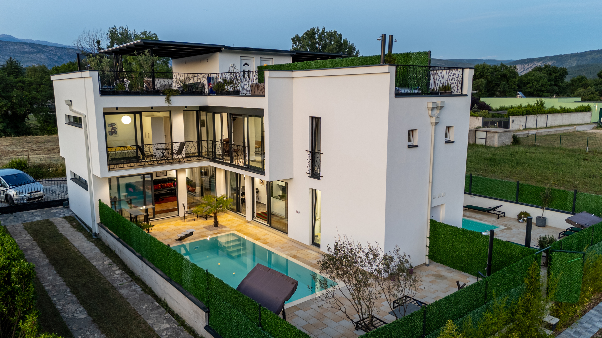

Dream River Escape
Nestled on a serene peninsula in the charming village of Buna, just 12 km south of Mostar. This 158 m² luxury house offers a perfect blend of comfort and tranquility. Step inside to discover a spacious, open-plan living area and a fully equipped modern kitchen. The elegant bedrooms feature premium beds and en-suite bathrooms for ultimate privacy. Outside, enjoy the private saltwater swimming pool, relax in the sauna, or unwind on the rooftop terrace complete with a jacuzzi. The lush garden leads directly to the soothing river waters.
- 🏊♂️ Private Saltwater Pool & Sun Loungers
- 🛁 Wellness: Jacuzzi & Private Sauna
- 🛏️ 3 Bedrooms & 2 Bathrooms
- 🍳 Fully Equipped Kitchen & Dining
- 🔥 Outdoor BBQ, Garden & River Access
- 📺 Smart TV & Washing Machine
- 📶 Fast Free WiFi & Air Conditioning
- 🚗 Free Private Parking